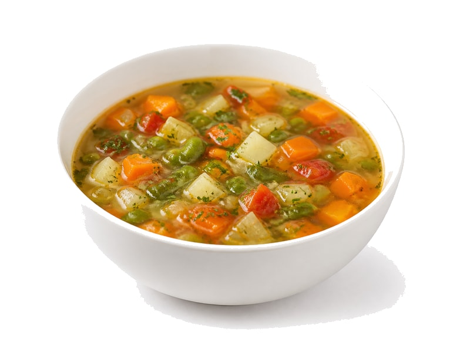

Zupy
Zupa kalafiorowa
Zupa kalafiorowa: 2 g białka, 55 kcal, 6 g węglowodanów i 2.5 g tłuszczu na 100 g. Kategoria: Zupy.
Kalorie55 kcalna 100 g
Białko / proteiny2 g
Węglowodany6 g
Tłuszcz2.5 g
Cena (szac.)~0,83 złza 100 g
Ceny zaktualizowano: maj 2026 (szacunek — ceny w popularnych supermarketach)
Porcja: miska (350g)
| Kalorie | 193 kcal |
|---|---|
| Białko | 7 g |
| Węglowodany | 21 g |
| Tłuszcz | 8.8 g |
| Cena (szac.) | ~2,89 zł |
Szczegółowe składniki odżywcze na 100 g
| Wartość energetyczna (kalorie) | 55 kcal |
|---|---|
| Białko (proteiny) | 2 g |
| Węglowodany | 6 g |
| Tłuszcz | 2.5 g |
| Tłuszcze nasycone | 1.5 g |
| Tłuszcze nienasycone | 1 g |
| Witaminy i minerały | Witamina C, Potas, Żelazo |
| Współczynnik kcal / 1 g białka | 27.5 |
| Cena produktu (szac. za 100 g) | ~0,83 zł |
| Cena za 100 g białka (szac.) | ~41,29 zł |